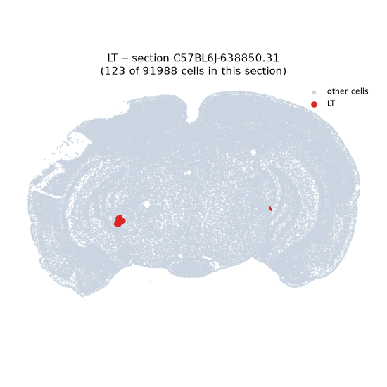
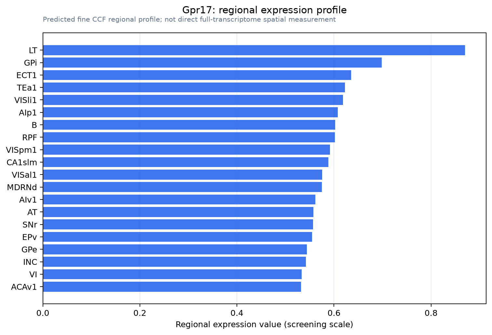

Gpr17
Uracil nucleotide/cysteinyl leukotriene receptor (UDP/CysLT receptor) (G protein-coupled receptor 17)
Spatial tier: REGION_BIASED · Class: GPCR · Top region: LT (Lateral terminal nucleus of the accessory optic tract) · Positive regions: 42/554
44.5Discovery Score
36.3Targetability Score
CEvidence grade C
What this means: Gpr17: fine CCF profile is region-biased toward LT (top regions: LT, GPi, ECT1, TEa1, VISli1); this is a discovery lead, not direct proof.
Direct spatial evidence
MERFISH REGION LOCATOR

Regional expression figure

Predicted WMB × fine-CCF profile; not direct full-transcriptome spatial measurement.
Spatial profile
Evidence and specificity
- Evidence status
- PREDICTED_FINE
- Direct sources
- None; predicted localization only
- Exclusive threshold
- 12 positive regions out of 554
- Spatial specificity
- 0.284
- Top-region fraction
- 0.045
- Filter status
- PASS
Interpretation limits
- Cell-type-to-region projection is imputed expression, not direct spatial measurement.
- Adult reference atlases do not establish stability across age, sex, strain, state, or disease.
- Transcript abundance does not guarantee protein abundance or genetic-tool performance.